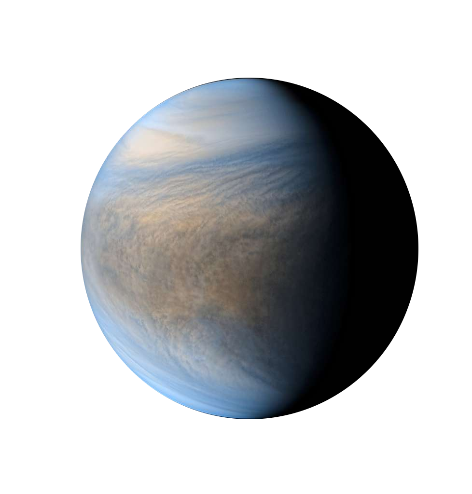

Darkmode
Venus Climate Database v1.1 : The Web Interface
[Information]
[Gallery]
[Report issue]
Main settings
Advanced settings
One-click presets
CUSTOMIZE TIME COORDINATES
VENUS date
Local Time
Venusian hour
write a value (or) a range 'val1 val2' (or) 'all'
EARTH date
YY / MM / DD @ hh:mm:ss UTC
/
/
@
:
:
Earth Julian Date
Venus Solar Longitude
CUSTOMIZE DATA REQUEST
Same
localtime
everywhere
off
on
Cloud albedo/EUV scenario
Standard cloud albedo ave solar
Standard cloud albedo min solar
Standard cloud albedo max solar
Low cloud albedo ave solar
High cloud albedo ave solar
EUV deduced from Earth date
EUV specified
EUV E10.7 factor
s.f.u
High-resolution topography
off
on
Averaging
(only for 2D plots for now!)
off
zonal
diurnal
LANDING SITE & DATE
CUSTOMIZE SPATIAL COORDINATES
write a value (or) a range 'val1 val2' (or) 'all'
Latitude
degree North
Longitude
degree East
Altitude
m above surface
m above "reference sphere"
m from Venus center
Pa (pressure level)
CUSTOMIZE FIGURES
Figure format
PNG
PNG hi-res
EPS
[1D] Log(values)
off
on
[2D] Colormap
blue green yellow red
grey
blue
yellow orange red
rainbow
black red yellow
blue white red
red white blue
[2D] Values range
to
[2D map]
flat
sphere
N pole
S pole
proj @ lat
lon
[2D map] Transparency (%)
[2D map] Wind vectors
off
on
[2D map]
Add marker at lat
lon

©JAXA/ISAS/DARTS/Damia Bouic
CUSTOMIZE VARIABLE(S) TO BE DISPLAYED
Variable 1
Temperature (K)
Variable 2
(None)
Temperature (K)
Variable 3
(None)
Temperature (K)
Variable 4
(None)
Temperature (K)
Venus Climate Database (c) LMD/ESA.
Open source python interface
by
A. Spiga
(LMD).
Javascript time conversion by
E. Millour